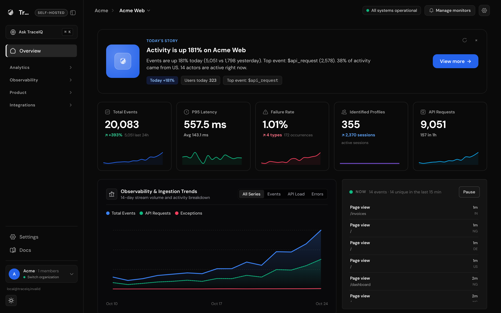
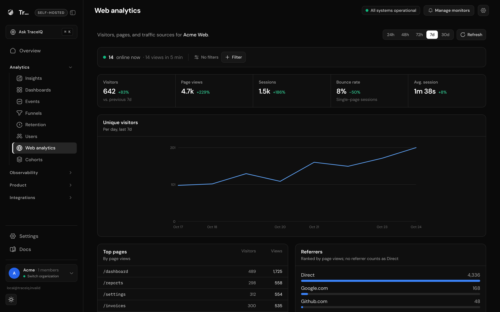
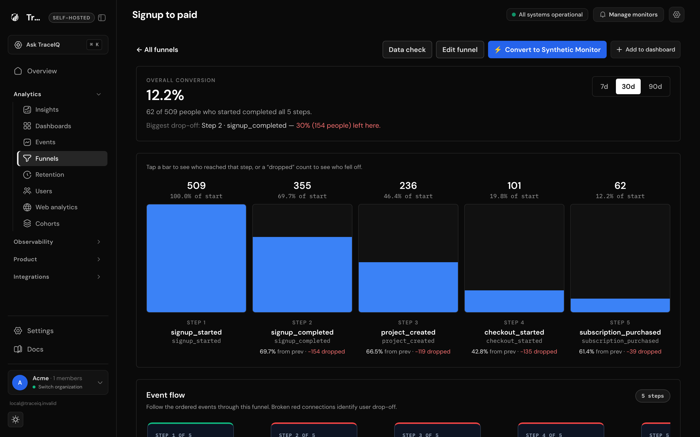
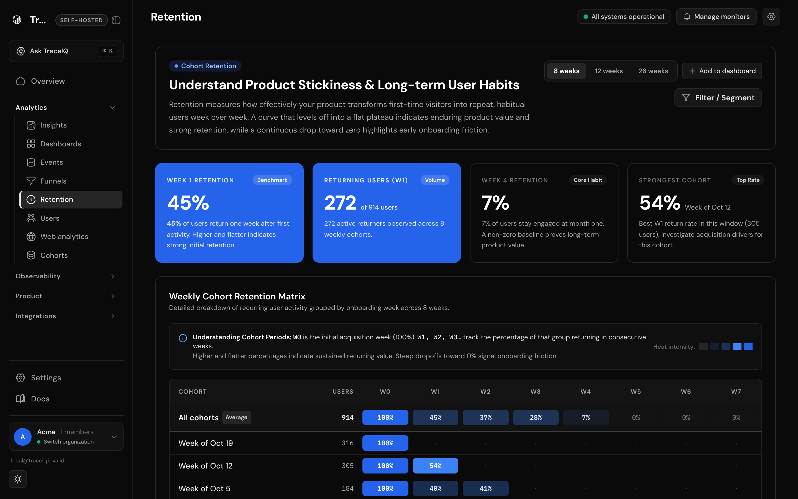
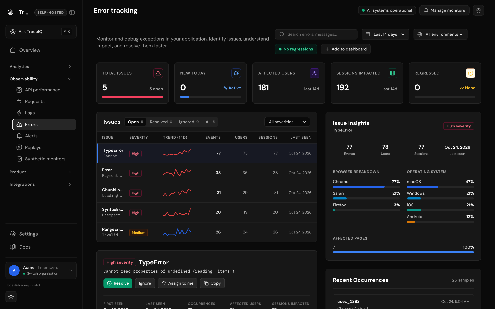
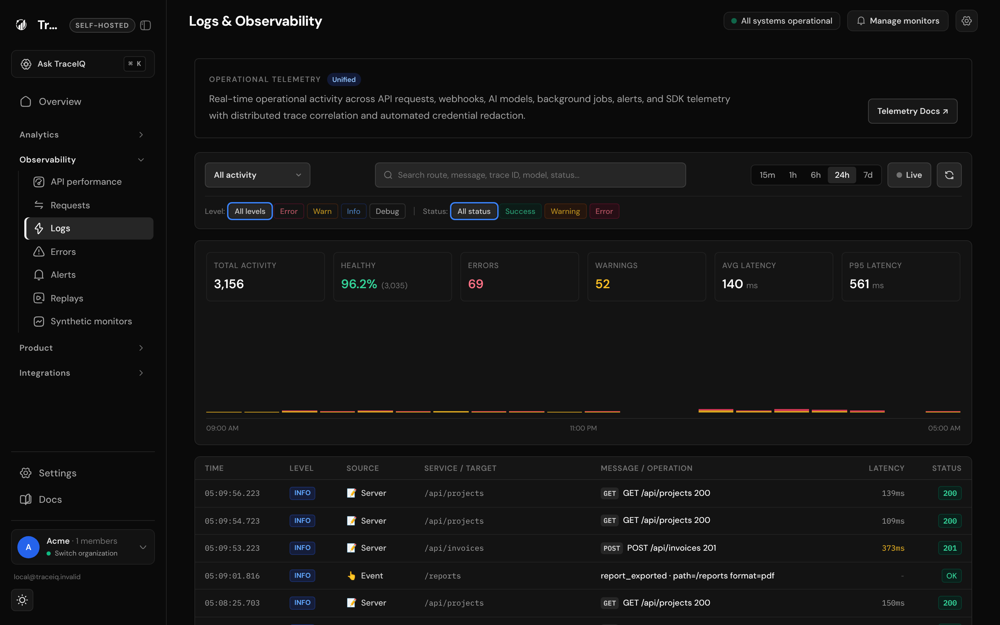
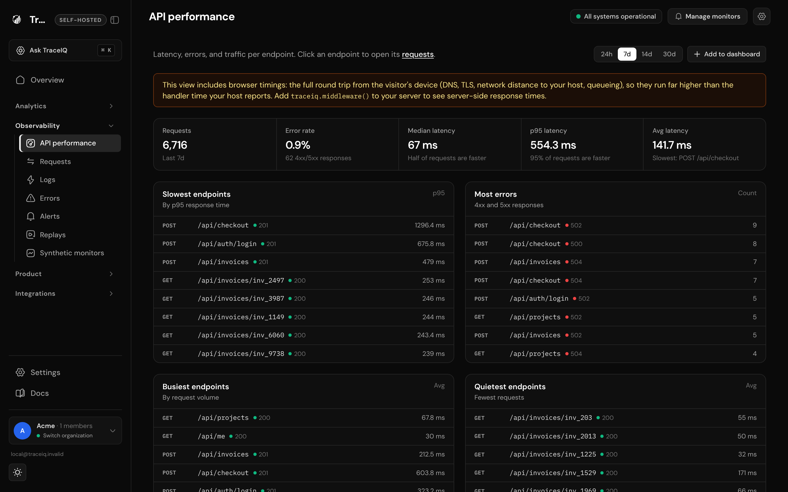

INTRODUCING
TraceIQ
for
traceiq.run/dashboard

~/acme
lib/traceiq.ts
traceiq.run/dashboard/web

traceiq.run/dashboard/funnels

traceiq.run/dashboard/retention

traceiq.run/dashboard/errors

traceiq.run/dashboard/logs

traceiq.run/dashboard/api-performance

~
MIT licensed
Your data, your servers
No account needed locally
TraceIQ
Open-source product analytics and observability.
traceiq.run